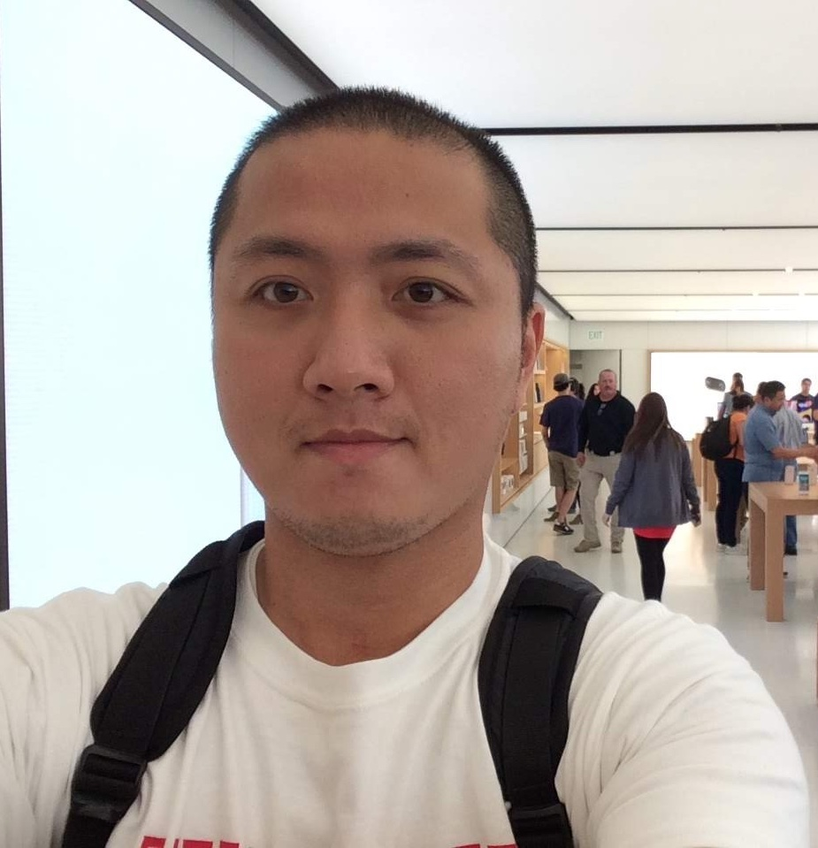

Wei-Lin Wu's Homepage
Ph.D. in Computer Science at University of California Santa Cruz
Wir müssen wissen, wir werden wissen. (English translation: We must know, we will know.) This is a quote from the great mathematician David Hilbert.

I'm from Tainan, Taiwan (a city where Jensen Huang and Lisa Su were born). Here's my CV for your reference. I'm very fortunate to have Professor Phokion G. Kolaitis as my advisor.
Programming
- C. It is the first programming language that I've learned in depth, and I like to see how things are going on under the hood via pointers and memory management. One of my favorite books on C programming is C: A Reference Manual, 5th edition by G. L. Steele and S. P. Harbison. (I also used Objective-C, a related language, while working as an iOS app developer years ago.)
- Python. It is very popular and is flexible in its syntax, and I mainly use it to experiment ideas.
- Haskell. It belongs to the purely functional paradigm and is one of my favorite languages, and I believe it should be a top choice for mathematicians who want to learn programming because of its math-like syntax (and semantics).
- Prolog. I learned this logic programming language (as the name suggests) while serving as a TA for CSE 112 Comparative Programming Languages back in 2019, and I'm sure logicians would definitely love it.
Besides these, I use LaTeX on a daily basis for typesetting research documents, and Bash script and AppleScript (as well as Automator) occasionally for automating things. Yes, I'm a Mac user.
Research
I'm generally interested in theoretical computer science including algorithm design, theory of formal languages, computability theory, computational complexity, graph theory and database theory. I have particular attention to the following fields:
- Graph Homomorphisms,
- Finite Model Theory.
My research results mainly involve combinatorial techniques. Check out this video for a brief explanation of my study.
Many years ago, I taught myself mathematical logic using the excellent textbook Mathematical Logic, 2nd edition by H.-D. Ebbinghaus, J. Flum and W. Thomas. The specific results that brought me to this area are the famous Gödel's Incompleteness Theorems, which assert that any axiomatization of first-order arithemtics (involving +, ×, 0, 1) that is consistent, decidable and allows every computable function ƒ over the set N of natural numbers to be represented by a first-order formula δƒ must be incomplete (first incompleteness), i.e., there is a statement true of N yet unprovable in that axiomatization, and that the consistency of such an axiomatization - when formalized as a first-order sentence - is an instance of such a statement if the axiomatization subsumes first-order Peano arithmetics (second incompleteness). The first incompleteness is closely related to the undecidable Halting Problem. In fact, (theoretical) computer science grew out of mathematical logic as a spin-off in a quest for a solution to the foundational crisis of mathematics.
In recent years, I have developed interests in finite model theory, a field in the research of logic in computer science where the themes include
- 0-1 law of logics,
- definability of classes of finite structures (such as graphs or relational databases) in certain logics, and
- identification of complexity classes with logics (a subfield known as descriptive complexity).
I study finite model theory in connection to the expressive power of homomorphism counts. It is known that a relational structure can be characterized up to isomorphism by homomorphism counts. More precisely, given two relational structures A and B, they are isomorphic if and only if hom(C, A) = hom(C, B) for every relational structure C, where hom(C, A) denotes the number of homomorphisms from C to A (likewise for hom(C, B)). This result is known as Lovász's Theorem (by L. Lovász). A parallel result, due to S. Chaudhuri and M. Y. Vardi, says that A and B are isomorphic if and only if hom(A, C) = hom(B, C) for every relational structure C. These results have motivated the following topics:
- Given an equivalence relation among graphs (viewed as relational structures) that is coarser than isomorphism, what class F captures this equivalence relation in the sense that two graphs A and B are equivalent if and only if hom(C, A) = hom(C, B) for every graph C in F? See, e.g., [2] in the References below for a discussion in this vein. A dual question is: for what class F is it true that two graphs A and B are equivalent if and only if hom(A, C) = hom(B, C) for every graph C in F?
- Given a class C of graphs, are there a positive integer k, graphs F1,..., Fk and a set X of k-tuples of natural numbers - all of which are fixed and depend on C only - such that for every graph A, it is in C if and only if the k-tuple (hom(F1, A),..., hom(Fk, A)) is in X? Likewise, a dual question can be asked with (hom(A, F1),..., hom(A, Fk)) in place of (hom(F1, A),..., hom(Fk, A)). See [1] in the References below for an in-depth treatment.
I'm active in the research of these topics, see the following publications section for more details. As for a reference textbook I highly recommend Graphs and Homomorphisms by P. Hell and J. Nešetřil.
References
[1] Yijia Chen, Jörg Flum, Mingjun Liu, and Zhiyang Xun. On algorithms based on finitely many homomorphism counts. In 47th International Symposium on Mathematical Foundations of Computer Science (MFCS 2022). Schloss Dagstuhl-Leibniz-Zentrum für Informatik, 2022.
[2] Holger Dell, Martin Grohe, and Gaurav Rattan. Lovász meets Weisfeiler and Leman. In Ioannis Chatzigiannakis, Christos Kaklamanis, Dániel Marx, and Donald Sannella, editors, 45th International Colloquium on Automata, Languages, and Programming, ICALP 2018, July 9-13, 2018, Prague, Czech Republic, volume 107 of LIPIcs, pages 40:1-40:14. Schloss Dagstuhl-Leibniz-Zentrum für Informatik, 2018.
Publications
- B. ten Cate, V. Dalmau, Ph. G. Kolaitis, and W.-L. Wu. When do homomorphism counts help in query algorithms? (to appear in ICDT 2024) In arXiv:2304.06294.
- W.-L. Wu. Query Algorithms Based on Homomorphism Counts. In Structure Meets Power Workshop (Extended Abstract), pages 24-26, July 4, 2022.
- A. Atserias, Ph. G. Kolaitis, and W.-L. Wu. On the Expressive Power of Homomorphism Counts. In 36th Annual ACM/IEEE Symposium on Logic in Computer Science, LICS 2021, Rome, Italy, June 29 - July 2, 2021, pages 1-13. IEEE, 2021.
Talks
- Contributed Talk for Structure Meets Power Workshop ICALP 2022, Paris, France (participated virtually via Zoom): Query Algorithms Based on Homomorphism Counts, 2022.
- Contributed Talk for Finite and Algorithmic Model Theory Seminar 22051, Schloss Dagstuhl, Germany (invited participant): On Capturing Some Equivalence Relations by Homomorphism Counts, 2022.
- Invited Talk for Logic in Computer Science Special Session of the 2024 ASL Annual Meeting, Iowa State University, Iowa, USA: A Study of the Expressive Power of Homomorphism Counts, 2024
Teaching Experiences
I have served as a teaching assistant for the courses offered at UC Santa Cruz:
- CMPS 130 Computational Models, Fall 2017
- CMPS 102 Introduction to Analysis of Algorithms, Spring 2018
- CMPS 130 Computational Models, Fall 2018
- CMPS 5J Introduction to Programming in Java, Winter 2019
- CMPS 130 Computational Models, Spring 2019
- CSE 112 Comparative Programming Languages, Fall 2019
- CSE 103 Computational Models, Winter 2020
- CSE 103 Computational Models, Fall 2020
- CSE 103 Computational Models, Winter 2021
- CSE 103 Computational Models, Fall 2021
- CSE 30 Programming Abstractions: Python, Summer 2022
- CSE 103 Computational Models, Fall 2022
Past Education
- B.S., Electrical Engineering, National Cheng Kung University, Taiwan, 2007
- M.S., Computer Science and Information Engineering, National Taiwan University, Taiwan, 2009
Hobbies
Hiking, biking, swimming, photography, language learning (human languages or programming languages), linguistics, etymology.